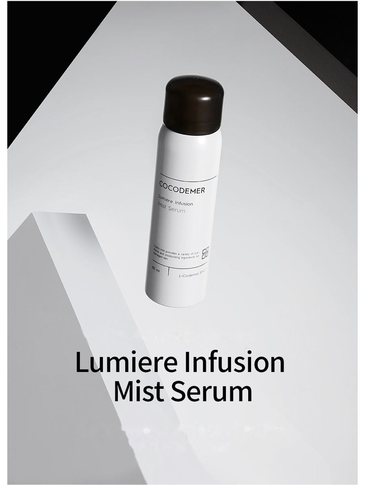
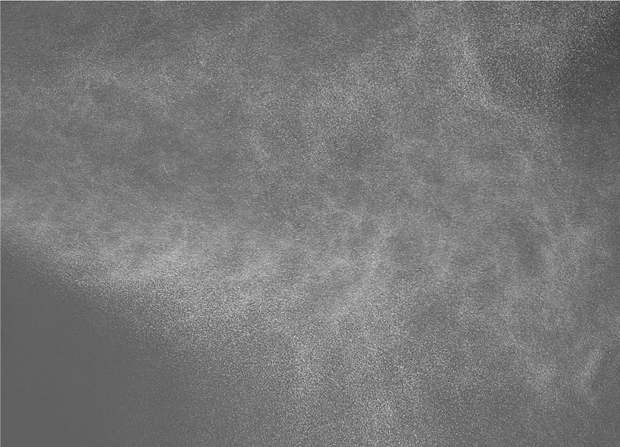
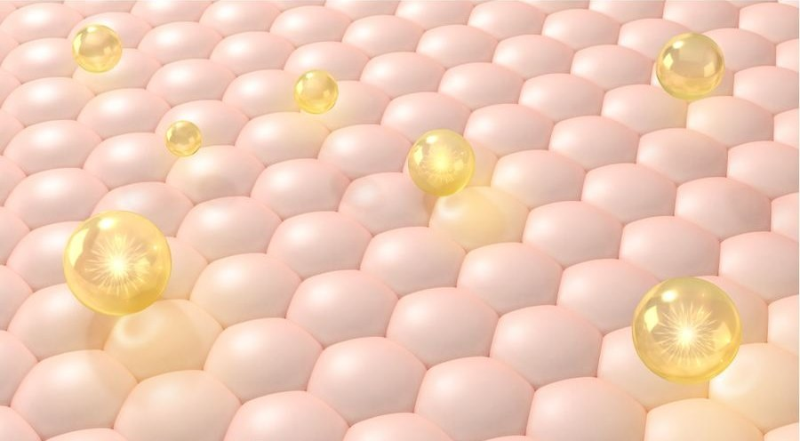

COCODEMER Lumiere Infusion Mist Serum
| 容量 | 80ml |
|---|---|
| 适用肤质 | 所有肤质 |
| 核心技术 | L-CODEMAR ELIXIR™ |
| 生产企业 · 化妆品责任销售商 | JUNGCOS CO., LTD. / COCODEMER CO., LTD. |
本产品是我们在开展定制化妆品业务时开发的产品。目前不在售。如需咨询再生产或焕新事宜，请通过 B2B 咨询与我们联系。

令肌肤水润有光泽的保湿喷雾
深层滋养、由内补水的保湿喷雾
含80%碳酸水，将水分输送至毛孔深处，在改善疲惫肌肤的同时，有助于令肌肤更健康。
多种保湿剂形成的水润薄膜，减少水分流失，并为肌肤缓冲压力，使保湿效果更持久。
提亮与抗皱功能性成分有助于改善肤色，恢复肌肤的再生能力。

高浓度稳定化天然油脂（Macadamia Ternifolia Seed Oil、Meadowfoam Seed Oil、澳洲坚果油等）易于贴合肌肤并渗透更深，
超细喷雾有助于呈现光滑有光泽的肌肤。
低分子与高分子透明质酸从内外两方面呵护肌肤水分，抵御干燥与外界压力。
令肌肤健康水润，不黏腻。
发酵成分从源头抵御有害菌与污染物，守护敏感肌肤的健康。
* 以上内容仅适用于特定成分。
核心活性成分代码
- Mo保湿保湿剂
- Aw抗皱抗老
- Wh美白美白
- Tb缓解肌肤问题缓解肌肤问题
- Bs基底柔软肌肤
为肌肤深层补水，同时收敛毛孔。还能阻隔水分流失，帮助形成健康的皮脂膜，令肌肤水润舒适，绝不黏腻。

对于因年龄增长而胶原蛋白与弹性蛋白功能下降的肌肤，刺激二者生成，改善肌肤弹性，并帮助肌肤恢复。
有助于改善微循环的提亮功能性成分烟酰胺，与抑制自由基的维生素P类化合物生物类黄酮协同作用，共同帮助改善肤色。
* 以上为成分说明，而非成品说明。
查看成分详情 →
L-CODEMAR ELIXIR™
COCODEMER 的独有技术。
以独到的多层纳米凝胶乳化包裹技术，将核心活性成分——椰子水、植物甾醇、20种氨基酸与蜂蜜提取物——稳定地复合在一起。再将该复合物构建为模拟肌肤自身结构的亲肤脂质体形态，最大限度提升向肌肤内的递送效率。
L-Codemar Elixir™ 增强肌肤细胞间的结合力，修复受损屏障并形成强韧的保护膜，使保湿效果更持久。

上方图片中的文字
L-CODEMAR ELIXIR™
- 椰子水
- 蜂蜜提取物
- 20种氨基酸
- 植物甾醇

上方图片中的文字
- 微生物、细颗粒物、黄沙、污染物与空气污染
- 过度的水分流失
受损肌肤
受损的细胞间脂质削弱了表皮细胞之间的连接
- 补充细胞间脂质 ↑
- 活性成分
- 抵御外界压力与污染物
- 水分流失减少
健康肌肤
补充的脂质使细胞间基质得以恢复 → 细胞之间的连接更加牢固
使用方法
闭上双眼，在距离约20 cm处均匀喷于全脸，然后轻拍至吸收。
深层滋养、由内补水的保湿喷雾
含80%碳酸水，将水分输送至毛孔深处，在改善疲惫肌肤的同时，有助于令肌肤更健康。
多种保湿剂形成的水润薄膜，减少水分流失，并为肌肤缓冲压力，使保湿效果更持久。
提亮与抗皱功能性成分有助于改善肤色，恢复肌肤的再生能力。
高浓度稳定化天然油脂（Macadamia Ternifolia Seed Oil、Meadowfoam Seed Oil、澳洲坚果油等）易于贴合肌肤并渗透更深，超细喷雾有助于呈现光滑有光泽的肌肤。
低分子与高分子透明质酸从内外两方面呵护肌肤水分，抵御干燥与外界压力。令肌肤健康水润，不黏腻。
发酵成分从源头抵御有害菌与污染物，守护敏感肌肤的健康。
为肌肤深层补水，同时收敛毛孔。还能阻隔水分流失，帮助形成健康的皮脂膜，令肌肤水润舒适，绝不黏腻。
对于因年龄增长而胶原蛋白与弹性蛋白功能下降的肌肤，刺激二者生成，改善肌肤弹性，并帮助肌肤恢复。
有助于改善微循环的提亮功能性成分烟酰胺，与抑制自由基的维生素P类化合物生物类黄酮协同作用，共同帮助改善肤色。
* 以上为成分说明，而非成品说明。
L-CODEMAR ELIXIR™
COCODEMER 的独有技术。以独到的多层纳米凝胶乳化包裹技术，将核心活性成分——椰子水、植物甾醇、20种氨基酸与蜂蜜提取物——稳定地复合在一起。再将该复合物构建为模拟肌肤自身结构的亲肤脂质体形态，最大限度提升向肌肤内的递送效率。L-Codemar Elixir™ 增强肌肤细胞间的结合力，修复受损屏障并形成强韧的保护膜，使保湿效果更持久。
闭上双眼，在距离约20 cm处均匀喷于全脸，然后轻拍至吸收。
| 净含量 | 80ml |
|---|---|
| 适用肤质 | 所有肤质 |
| 保质期 / 开封后使用期限 | 自生产日期起30个月；开封后12个月内使用 |
| 使用方法 | 闭上双眼，将瓶身置于距面部约20cm处，均匀喷于全脸，然后轻拍至吸收。 |
| 化妆品生产企业 | JUNGCOS CO., LTD. |
| 化妆品责任销售商 | COCODEMER CO., LTD. |
| 原产国 | 大韩民国 |
| 全成分（INCI） | Carbonated Water, Methylpropanediol, Glycerin, Niacinamide, Pentylene Glycol, Centella Asiatica Extract, Ficus Carica (Fig) Fruit Extract, Honey Extract, Carthamus Tinctorius (Safflower) Seed Oil, Cocos Nucifera (Coconut) Water, Hydrogenated Lecithin, Limnanthes Alba (Meadowfoam) Seed Oil, Macadamia Ternifolia Seed Oil, Oenothera Biennis (Evening Primrose) Oil, Sodium Hyaluronate, 1,2-Hexanediol, Acetyl Hexapeptide-8, Adenosine, Alanine, Alcohol Denat., Allantoin, Arginine, Aspartic Acid, Betaine, Bioflavonoids, Butylene Glycol, Carbomer, Carnitine, Carnosine, Ceramide NP, Cetearyl Alcohol, Cetyl Ethylhexanoate, Citric Acid, Citrulline, Creatine, Disodium EDTA, Ethylhexylglycerin, Glucosyl Hesperidin, Glutamic Acid, Glutamine, Glycine, Hydrogenated Phosphatidylcholine, Hydrogenated Polydecene, Inositol, Isoleucine, Isononyl Isononanoate, Leucine, Methionine, Myristic Acid, Neopentyl Glycol Diheptanoate, Ornithine, Palmitic Acid, Palmitoyl Pentapeptide-4, Panthenol, PEG-40 Hydrogenated Castor Oil, Phenylalanine, Phytosterols, Polyglyceryl-10 Myristate, Polyglyceryl-10 Stearate, Polyglyceryl-2 Stearate, Polyquaternium-51, Polysorbate 20, Proline, Propanediol, Raffinose, Serine, Sodium Citrate, Sodium Stearoyl Glutamate, Squalane, Stearic Acid, Threonine, Tranexamic Acid, Trehalose, Tryptophan, Tyrosine, Valine, Water, Fragrance (Parfum), Limonene, Phenoxyethanol |
| 功能性化妆品审批 | 提亮 · 改善皱纹功能性化妆品 |
| 注意事项 | 1. 使用中或使用后，或经阳光直射后，如使用部位出现红斑、肿胀、瘙痒等异常反应或副作用，请咨询专业医生。2. 请避免用于破损或受损的皮肤。3. 储存与使用注意事项 a. 请放置于儿童接触不到的地方。b. 请避免阳光直射保存。4. 气雾剂产品（不可燃气体）(1) 使用前请摇匀。(2) 请勿在同一部位连续喷射3秒以上。(3) 尽可能在距离身体20厘米以上处使用。(4) 请勿喷向眼周或黏膜等部位。(5) 注意不要直接吸入喷射气体。(6) 储存与使用注意事项 (a) 请勿存放于40°C以上的环境。(b) 请勿投入火中。(c) 丢弃前请确保罐内无残留气体。(d) 请勿存放于密闭场所。 |
| 质量保证 | 如本产品存在缺陷，将依据韩国公平交易委员会公布的《消费者纠纷解决标准》进行赔偿。 |
| 消费者咨询 | 010-3307-9341 / cocodemer@cocodemer.co.kr |
* 依据韩国化妆品标示与广告规定的必要披露事项。本译文仅供参考；如需经认证的成分声明、CPSR 或 CoA，请通过 B2B 咨询与我们联系。